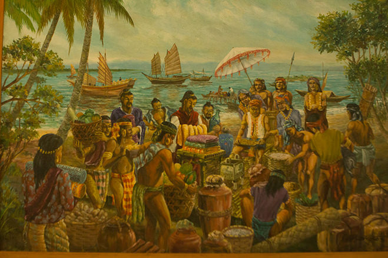
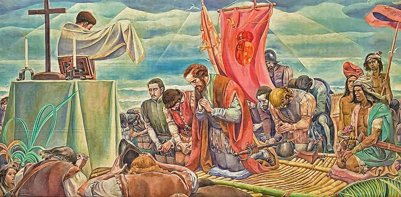
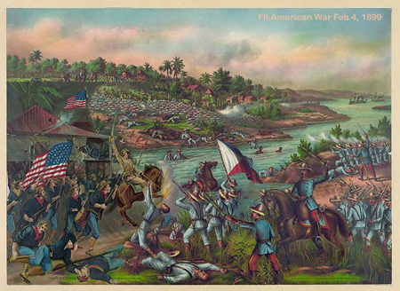
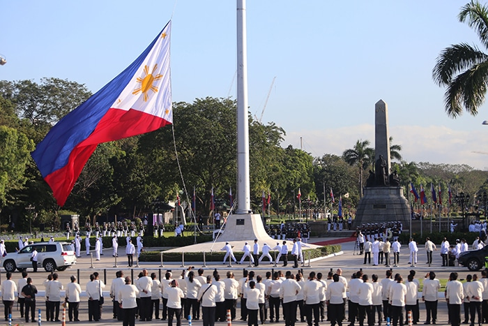

Explore the rich past of the Filipino people.

Before Spanish arrival, the Philippines was a network of thriving, self-governing barangays and sultanates led by Datus and Rajahs, boasting a high level of literacy through the Baybayin script. The archipelago functioned as a sophisticated maritime hub, trading gold and pearls with neighbors like China and India, while society was organized into a distinct class system where women held significant power as Babaylans (spiritual leaders). Far from being "uncivilized," the pre-colonial era was defined by a rich animist spirituality, advanced metalworking, and a complex legal system documented in artifacts like the Laguna Copperplate Inscription.

The Spanish era (1565–1898) lasted for 333 years and profoundly reshaped the Philippines through the "Three Gs": God, Gold, and Glory. Spain introduced Roman Catholicism, which remains the dominant religion today, and replaced indigenous scripts with the Roman alphabet, forever altering Filipino literature and language. This period saw the unification of disparate barangays under a centralized government in Manila, though many groups like the Igorots and the Moro Sultanates fiercely resisted colonial rule. The era ultimately sparked a wave of nationalism led by figures like José Rizal and the Katipunan, culminating in the Philippine Revolution and the end of Spanish rule following the Spanish-American War in 1898.

The American era (1898–1946) kicked off with the Treaty of Paris, as Spain sold the archipelago to the U.S. for $20 million, leading to a bloody three-year Philippine-American War for independence. Once established, the Americans implemented a policy of "Benevolent Assimilation," introducing a public school system (led by the Thomasites) that made English the medium of instruction and the basis for the current government structure. This period saw rapid infrastructure development, the modernization of public health, and the introduction of democratic institutions, though the economy became heavily dependent on American markets. The era was briefly interrupted by the Japanese Occupation during WWII, but eventually concluded on July 4, 1946, when the Philippines finally gained full sovereignty, leaving a lasting legacy of American-style pop culture, law, and education.

The Philippines gained its final independence on July 4, 1946, following the Treaty of Manila, which formally ended nearly 50 years of American rule. This transition was paved by the 1934 Tydings-McDuffie Act, which established a 10-year "Commonwealth" period to prepare the nation for self-governance, though the timeline was interrupted by the brutal Japanese occupation during WWII. Despite the 1946 date, the country now officially celebrates Independence Day on June 12, honoring Emilio Aguinaldo’s 1898 declaration against Spain. This modern shift, decreed by President Diosdado Macapagal in 1962, emphasizes the nation's indigenous struggle for freedom over the "grant" of independence from the United States.